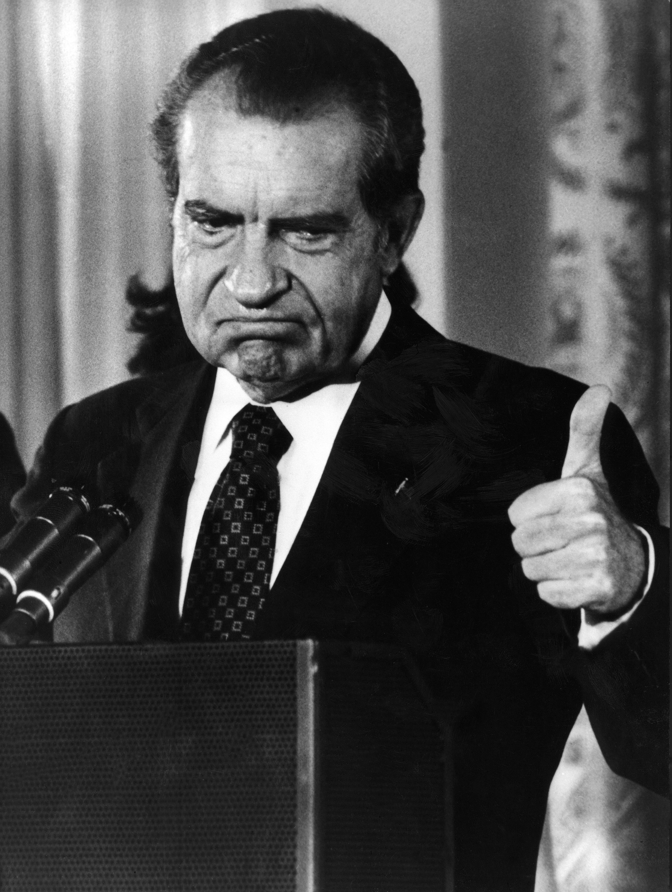

Tuesday, February the 5th, 2013
back to: title, date or indexes
We already knew about Richard Milhous Nixon's love of mashed potatoes. Now, thanks to Salim Fadhley, we learn of his diametrically opposite view of soup. Mr Fadhley pointed me to this passage from President Nixon : Alone In The White House by Richard Reeves (2001):

. . .on March 24 [1969], the President hosted his first state dinner, for Prime Minister Pierre Trudeau of Canada. He complained to Haldeman about it the next morning : “We've got to speed up these dinners. They take forever. So why don't we just leave out the soup course?”
“Well. . .” Haldeman began.
Nixon cut him off : “Men don't really like soup.”
On a hunch, the chief of staff called the President's valet, Manolo Sanchez, and asked : “Was there anything wrong with the President's suit after that dinner last night?”
“Yes. He spilled soup down the vest.”
The action memo went out : No more soup, ever.
Hooting Yard on the Air, February the 7th, 2013 : “Who Was Captain Nitty?” (starts around 06:15)